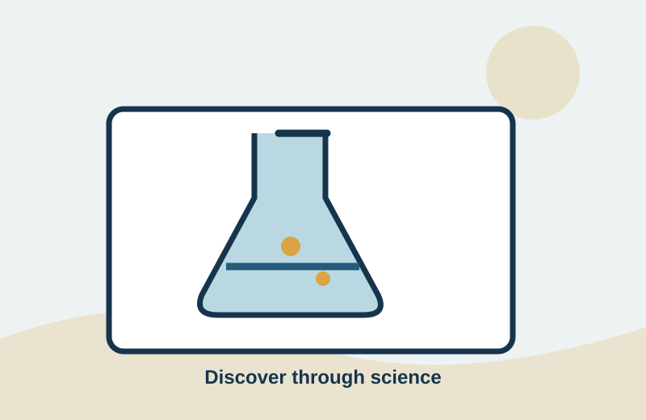

Creche & Nursery
Play-based experiences introduce language, early numeracy, movement, creativity and social development in a caring environment.
- Early communication
- Number awareness
- Creative play
- Social development
A balanced learning pathway designed to build strong foundations, independent thinking and practical skills.
Play-based experiences introduce language, early numeracy, movement, creativity and social development in a caring environment.
A broad foundation helps pupils become confident readers, clear communicators and active problem-solvers.
Learners explore a wider range of subjects while developing study habits, teamwork and analytical skills.
Subject pathways support deeper learning and preparation for examinations, further education and careers.
Our subject areas encourage learners to connect ideas, communicate clearly and apply what they know to practical challenges.

Books and guided reading help learners develop vocabulary, comprehension and imagination.
Digital literacy introduces responsible technology use, computing concepts and practical skills.
Observation, investigation and hands-on activities bring scientific ideas to life.